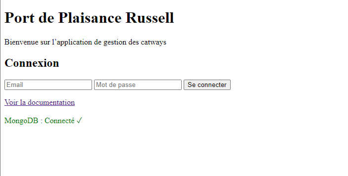
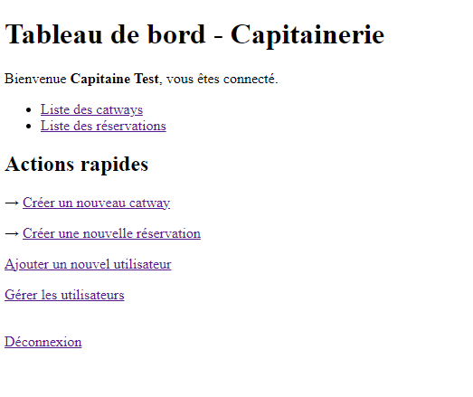
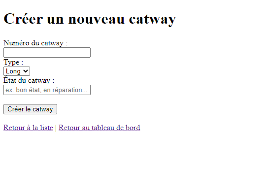
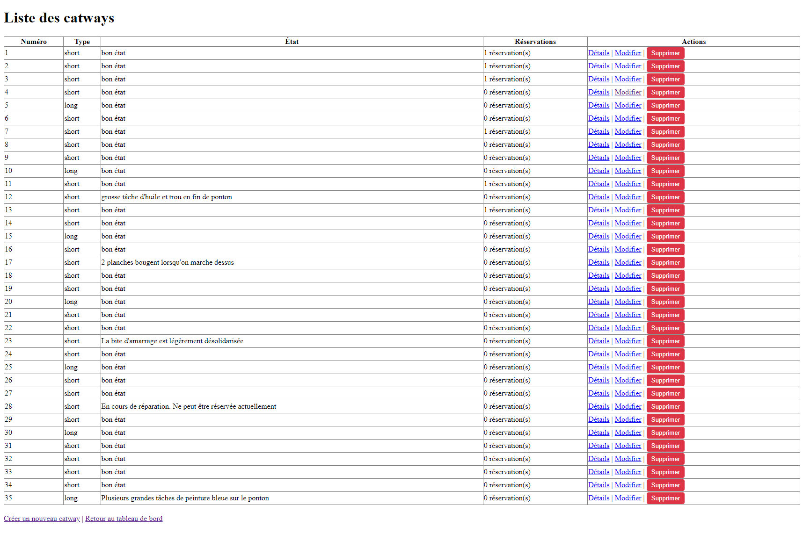
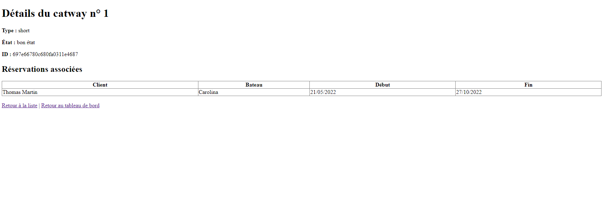
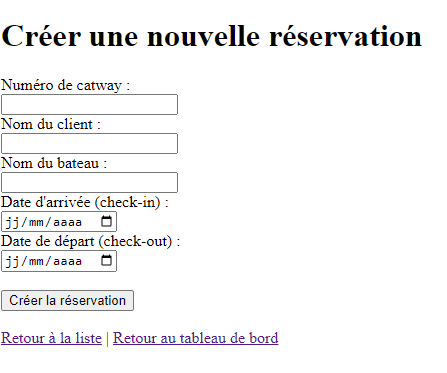
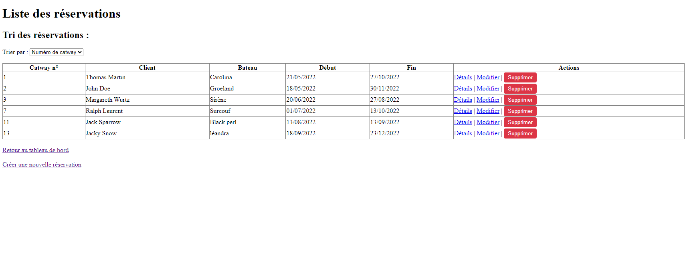
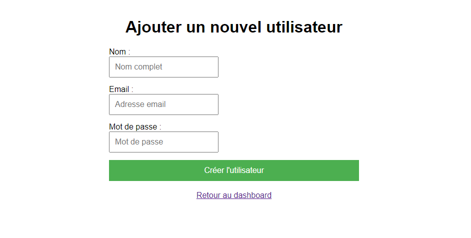
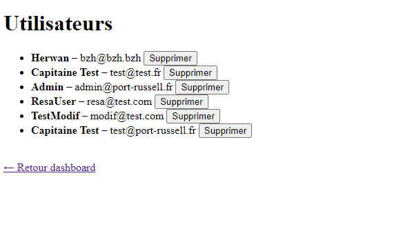

1. Vue d’ensemble
L’API permet de gérer un port de plaisance via une interface web et des appels JSON.
- Ressources principales : Utilisateurs • Catways • Réservations
- Authentification : JWT stocké dans un cookie httpOnly nommé
jwt - Base URL :
http://localhost:3000(ou votre domaine) - Format des réponses :
- Pages web → rendu EJS (interface humaine)
- API JSON → réponses JSON (DELETE, erreurs, etc.)
2. Tutoriel – Prise en main + exemple
Étape 1 — Connexion

→ Crée un cookie jwt → redirige vers /dashboard (interface web)
Étape 2 — Navigations dans le tableau de bord

Depuis ce tableau nous aovns accès à toutes les fonctionnalités de l'api, visualisation des liste de catways et des reservations et les créations de catway, reservation et d'utilisateur
Étape 3 — Créer un catways, visualisation de la liste et modifications



Pou créer un catway, inscrivez un numéro, si le numéro choisi est indisponible un message d'erreur apparaîtra, choisisser le type long ou short et indiquer l'état général du catway, en allant sur la liste vous pourrez voir le nombre de catways disponible, si un catways à une reservation ou non , leurs types, leurs états ainsi que les nouveaux catways tout juste ajoutés.
A tout moment il est possible de modifier les infosmations avec le bouton modifier en cas d'erreur, et de les details ou reservation associées des catways avec le bouton detail et de retirer de la liste avec le bouton supprimer
Étape 4 — Créer une réservation, voir la liste et modifications des reservations



Pou créer une reseration, inscrivez un numéro catways, si le numéro choisi est indisponible un message d'erreur apparaîtra, saisissez le nom du client et celui du bateau, ensuite selectionnez la date d'arrivée et de départ et appuyez sur creer la reservation.
La page Liste des reservations vous permet de consulter les reservations enregistrées avec le numéro des catways utilisés, nom des cients et navires associés d'y apporter des modifications ou d'en supprimer
Étape 5 — Création et gestion de nouveaux utilisateurs


Ce menu vous permez d'ajouter un nouvealle utilisateur, pour cela il vous faudra renseigner un Nom , un Email et un Mot de Passe, le nouvel utilisateur sera aussitôt enregistrer sur la BDD.
Le menu de gestion des utilisateur permet de consulter une liste des utilisateurs enregistrés avec nom et mail et la possibiliter de surrpimer les utilisateurs inutiles
4. Glossaire
| Terme | Définition |
|---|---|
| Catway | Emplacement d’amarrage numéroté (quai flottant ou fixe) |
| type | Type de catway : short ou long |
| catway état | État actuel : bon / moyen / mauvais |
| Réservation | Période d’occupation d’un catway par un bateau |
| checkIn / checkOut | Dates d’arrivée et de départ (format ISO YYYY-MM-DD) |
| JWT / cookie jwt | Jeton d’authentification stocké dans un cookie httpOnly sécurisé |